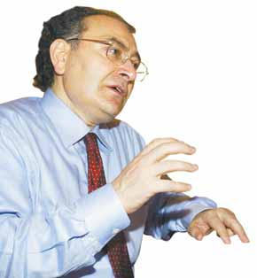

E-Kitap haline getiren arkadasin ellerine saglik...Yazilar alintidir sadece düzenleme bana aittir Derleme: 25 Temmuz

Prof. Dr. Nevzat Tarhan Merzifon’da 1952
yılında doğdu. 1969 yılında Kuleli Askeri
Lisesini 1975 yılında İstanbul Üniversitesi
Cerrahpaşa Tıp Fakültesini bitirdi. GATA stajı,
Kıbrıs ve Bursa kıta hizmetinden sonra 1982
yılında GATA’da Psikiyatri uzmanı oldu.
Erzincan ve Çorlu’da hastane hekimliği sonunda
GATA Haydarpaşa’da yardımcı Doçent (1988) ve
Doçent (1990) oldu. Klinik direktörlüğü yaptı.
Albaylığa (1993) ve Profesörlüğe (1996)
yükseldi. 1996-1999 yılları arasında Yüzüncü Yıl
Üniversitesinde öğretim üyeliği ve Adli Tıp
Kurumunda bilirkişilik yaptı. Kendi isteğiyle
emekli oldu. Halen Memory Center isimli
Nöropsikiyatri Merkezi’nin yöneticiliğini ve
(İDER) İnsani Değerler ve Ruh Sağlığı Vakfının
Başkanlığını yapmaktadır.
1989 yılında Stres, 1991 yıllında
“Psikofarmakolojide Yenilikler”, 1992 yılında “Saldırganlık”, 1993 yılında “Serotonin”
konularında Türkiye’de ilk defa uluslararası katılımlı sempozyumlar düzenledi. Altı yıl boyunca “Psikofarmakoloji” dergisinin editörlüğünü yaptı. “Sleep and Hypnosis” dergisinin yayın kurulunda yer aldı. 1991 yılında Hollanda’da “Destructive Drives and Impulse Control”
konulu uluslararası kongrede “En İyi Araştırmacı”, 2003 yılında STV de yaptığı Makul Çözüm programı için RTGD En İyi Toplum Programı ödülü, 2005 yılında SKY TURK te yaptığı Psikoyorum programı için Başbakanlık Aile ve Sosyal Araştırmalar Genel Müdürlüğü, ‘aile eğitimine verdiği destek ve topluma yaptığı koruyucu ruh sağlığı hizmetinden’ dolayı ödül aldı.
American Psychiatry Assosiation (APA), New York Academy of Science, New York Academia Psiychiatrie Foundation, Internatıonal Psychogeriatric Association (ıpa), EEG and Clinical Neuroscience Society (ECNS), International Society for Neuroimaging in Psychiatry (ISNIP) ve National Geografic Society adlı uluslararası derneklerde aktif üyedir. 31’i uluslararası olmak üzere 100’ün üzerinde yayını vardır. İngilizce ve Almanca bilmektedir. Evli ve iki çocuk babasıdır.
Yayınlanmış Eserleri:
"Stres ve Hastalıklar”, 1989
“Psikofarmakolojide Yenilikler”, 1991
“Şiddet (Biyopsikososyal Yönleri ile Şiddet)”,Ortak Yazar-1998
“Kendinizle Barışık Olmak”, 2001
“Mutluluk Psikolojisi, Stresi Mutluluğa Dönüştürmek”2002
“Psikolojik Savaş, Gri Propaganda” 2002
“Makul Çözüm, Aile İçi İletişim Rehberi” 2004
"Kadın Psikolojisi", 2005
"Evlilik Psikolojisi", 2006
"Duyguların Dili", 2006

PSİKOLOJİK SAVAŞ
İÇİNDEKİLER
1.BÖLÜM: ASKERİ POLİTİK SAVAŞ
2.BÖLÜM: PROPAGANDA VE BEYİN YIKAMA
3.BÖLÜM: BEYİN KONTROLÜ NEDİR?
4.BÖLÜM: DİRENME DOKTRİNİ
5.BÖLÜM: KÜRESEL TEHLİKE
6.BÖLÜM: PSİKOLOJİNİN BUGÜNÜ
7.BÖLÜM: KAVGA ÇIKARAN KİŞİLİKLER
8.BÖLÜM: KORKU KÜLTÜRÜ VE EĞİTİM
9.BÖLÜM: KÜLTÜRLER ÇATIŞMASI VE İNSAN PSİKOLOJİSİ